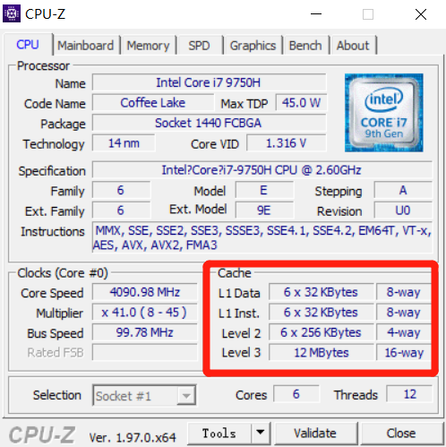
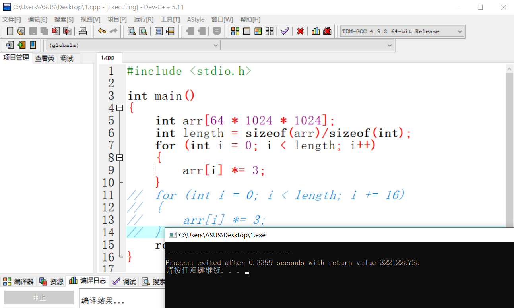
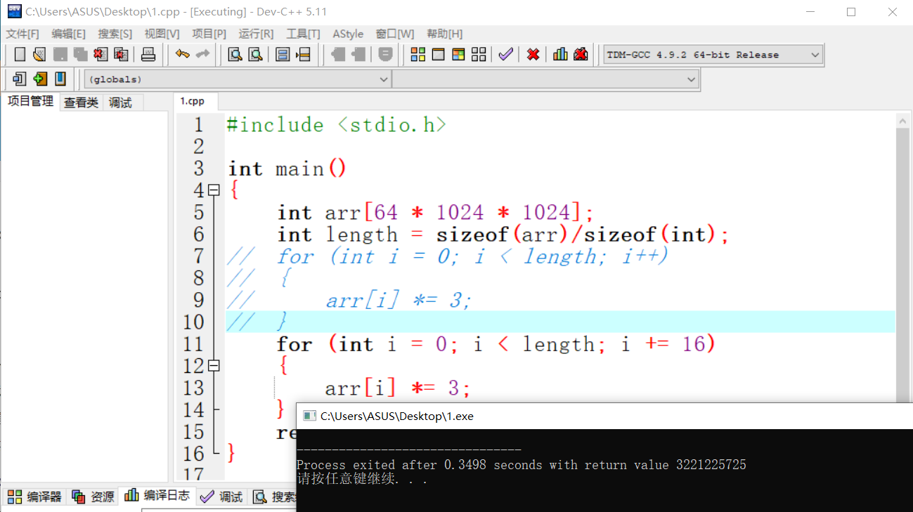
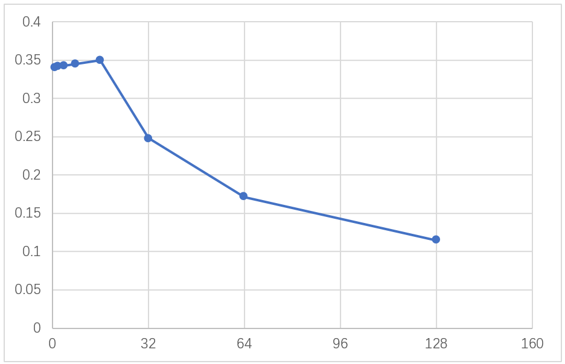
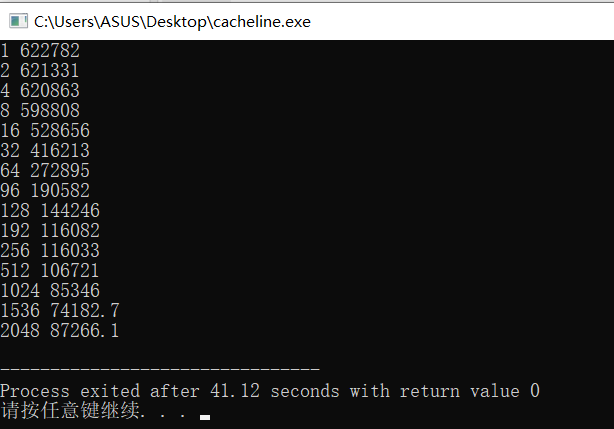
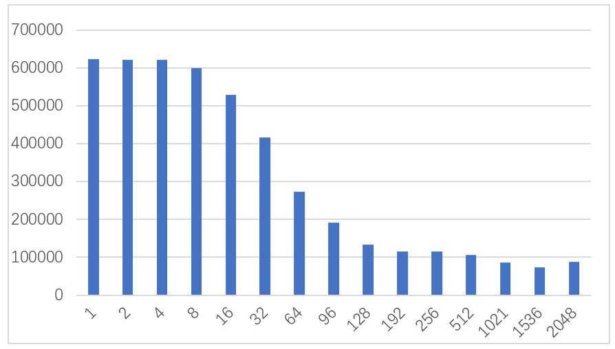

编写程序，测量cacheline的大小
测量cacheline前需要了解的信息
计算机带有两级或三级缓存，通常称为 L1、L2 和L3。L的等级越低代表离CPU越近，通过任务管理器和软件CPU-Z，我了解到在我的机器上，有一个6×64KB的L1数据缓存、一个6×64KB的L1指令缓存、一个6×256KB的L2缓存和一个12MB的L3数据缓存。
L1数据和指令缓存分别用于存放数据及执行数据的指令解码，L2二级缓存是L1一级缓存跟主内存之间的缓冲器，L3为L2与主内存之间的缓冲器。其中L3是计算 CPU共享的，L1、L2是CPU中核独享的。
cache分成多个组，每个组分成多个行。
如图中的8-way指的是8路组相连（8-way set associative），每个组里面有8个行。linesize是cache的基本单位，从主存向cache迁移数据都是按照linesize为单位替换的。比如linesize为64Byte，那么迁移必须一次迁移64Byte到cache。


[#part1]1
2
3
4
5
6
7
8
9
10
11
12
13
14
15
| #include <stdio.h>
int main()
{
int arr[64 * 1024 * 1024];
int length = sizeof(arr)/sizeof(int);
for (int i = 0; i < length; i += 16)
{
arr[i] *= 3;
}
return 0;
}
|
第一个循环将数组的每个值乘3，第二个循环将每16个值乘3，第二个循环只做了第一个约6%的工作，但在现代机器上，两者几乎运行相同时间：在我机器上分别是34毫秒和35毫秒（如下图所示）。


两个循环花费相同时间的原因跟内存有关。循环执行时间长短由数组的内存访问次数决定的，而非整型数的乘法运算次数。这说明这两个循环的主存访问次数是相同的。
进一步探索这个例子。我们尝试使用不同的循环步长，而不仅仅是1和16。
[#part2]1
2
| for (int i = 0; i < arr.Length; i += K)
arr[i] *= 3
|
通过程序运行所得
K1=1、S1=0.3399
K2=2、S2=0.3408
K3=4、S3=0.3428
K4=8、S4=0.345
K5=16、S5=0.3498
K6=32、S6=0.2479
K7=64、S7=0.1714
K8=128、S8=0.1144
Tips：测试时尽量关闭其他应用程序，防止缓存的抢占，且要使用尽量大的测试次数，去掉偏离较大的值取中位数，以保证测试结果不具有随机性
将上面的数据导入Excel生成折线图

可以看出从16开始，每次步长加倍，运行时间急剧下降。
原因是CPU以64字节为单位的块(chunk)拿取，称为一个缓存行(cache line)。当你读一个特定的内存地址，整个缓存行将从主存换入缓存，并且访问同一个缓存行内的其它值的开销是很小的。由于16个整型数占用64字节（一个缓存行），for循环步长在1到16之间必定接触到相同数目的缓存行：即数组中所有的缓存行。当步长32，我们只有大约每两个缓存行接触一次，当步长为64，只有每四个接触一次。
测量cache
遍历一个整型数组，每16个值自增1——改变每个缓存行。当遍历到最后一个值，就重头开始。我们将使用不同的数组大小，可以看到当数组溢出一级缓存大小，程序运行的性能将急剧滑落。
[#part3]1
2
3
4
5
6
7
8
9
10
11
12
13
14
| #include <stdio.h>
int main()
{
int arr[64 * 1024 * 1024];
int length = sizeof(arr)/sizeof(int);
int steps = 64 * 1024 * 1024;
int lengthMod = length - 1;
for (int i = 0; i < steps; i++)
{
arr[(i * 16) % lengthMod]++;
}
return 0;
}
|
通过列表可以推断出我们计算机各级缓存的大小。
测量cache line
通过上一个实验可以得到L1 cache 的大小为 384kb，下面通过一个实验来测量自己电脑L1 cache line缓存行的大小，我们采用下面的方案（具体环境配置和详细代码[此处代码做了一部分修改]可参考文末博客）：
1）开辟一块内存
2）按照不同的步长stride进行若干次内存访问
3）记录时间，统计平均的数据吞吐量(kb/s)
4）画图分析，通过柱状图分析 stride 与 kbps 的关系
可行性分析：因为按照不同的步长，当我们的步长在L1 cache line之内，我们能够命中上一次访问数据时，载入L1 cache的数据行，而当我们的步长超出L1 cache line的大小，就会发生miss，拉低访问的时间（以此产生较大的偏差）。
[#part4]1
2
3
4
5
6
7
8
9
10
11
12
13
14
15
16
17
18
19
20
21
22
23
24
25
26
27
28
29
30
31
32
33
34
35
36
37
38
39
40
41
42
43
44
45
46
47
48
49
50
51
52
53
54
55
56
57
58
59
60
61
62
63
64
65
66
67
68
69
70
71
72
73
74
75
76
77
78
79
80
81
82
83
84
85
86
| #include <bits/stdc++.h>
#define B 1
#define KB 1024
#define MB 1048576
using namespace std;
using std::chrono::high_resolution_clock;
using std::chrono::duration;
using std::chrono::duration_cast;
random_device rd;
mt19937 gen(rd());
void random_access(int size)
{
int n = size / sizeof(char);
char* buffer = new char[n];
fill(buffer, buffer+n, 1);
uniform_int_distribution<> dis(0, n-1);
int test_times = 10000000 * 10;
vector<int> random_index;
for(int i=0; i<test_times; i++)
{
int index = dis(gen);
random_index.push_back(index);
}
int sum = 0;
high_resolution_clock::time_point t1 = high_resolution_clock::now();
for(int i=0; i<test_times; i++)
{
sum += buffer[random_index[i]];
}
high_resolution_clock::time_point t2 = high_resolution_clock::now();
duration<double> time_span = duration_cast<duration<double>>(t2 - t1);
double dt = time_span.count();
cout<<(size/1024)<<" "<<(((double)sum/1024.0) / dt)<<endl;
delete[] buffer;
}
void stride_access(char* buffer, int stride, int size)
{
int n = size / sizeof(char);
int sum = 0;
high_resolution_clock::time_point t1 = high_resolution_clock::now();
for(int j=0; j<stride; j++)
{
for(int i=0; i<n; i+=stride)
{
sum += buffer[i];
}
}
high_resolution_clock::time_point t2 = high_resolution_clock::now();
duration<double> time_span = duration_cast<duration<double>>(t2 - t1);
double dt = time_span.count();
cout<<stride<<" "<<(((double)sum/1024.0) / dt)<<endl;
}
void test()
{
int size = 400 * MB;
int n = size / sizeof(char);
char* buffer = new char[n];
fill(buffer, buffer+n, 1);
vector<int> strides{1*B,2*B,4*B,8*B,16*B,32*B,64*B,96*B,128*B,192*B,256*B,512*B,1024*B,1536*B,2048*B};
for(auto s : strides)
{
stride_access(buffer, s, size);
}
}
int main()
{
test();
return 0;
}
|
执行结果

将上面的数据生成柱状图

可以看到：
在步长 stride 位于 1-32 Byte 之间时，吞吐量几乎不变
在步长 stride 位于 16-128 Byte 之间，吞吐量逐步下降
在步长 stride 大于 128 Byte 之后，吞吐量几乎不变
当步长 stride 小于 L1 cache line 时，若干次访问才会发生一次 miss（访问的偏移量超出一行 L1 cache line），而当步长 stride 大于 L1 cache line，每次访问都会miss。
根据测试数据，推测 L1 cache line 约为 64 Byte，这与我们的测试结果相吻合。
参考博客：
http://igoro.com/archive/gallery-of-processor-cache-effects/
https://blog.csdn.net/qq_21125183/article/details/80590934
https://blog.csdn.net/weixin_44176696/article/details/111873717